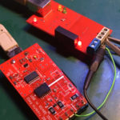

 I just built two RS-485 adapters (version 2) and decided to write a little note about the RS-485 bus (and differential line) theory, plus perform some testing of the devices. This material mostly interesting for newbies.
At the end of this article, you can find a funny way to test these devices 🙂
Present adapters are based on the USB to serial converter, which means that for the computer’s OS, these devices are just a serial interface. Every byte written to the interface is transferred and should be received on the other end of this “pipe”.
Of course, RS-485 is nothing to deal with transmission protocols.
This standard defines only an electrical differential line with a transmitter, receivers, line termination, etc. What is actually on the line is defined by the top-level application.
Let’s do some experiments.
Connect the adapter to the Linux PC and run dmesg command to find the device’s file name. If everything is ok, there must be something like /dev/ttyUSBX, where X is a number of the device.
Now writing and reading can be performed on the device.
Connect the oscilloscope probe to the FT232 pin 1. This is TX. Now everything is ready to send some data and capture some bits. Of course, at this point, it’s not RS-485 but a simple serial line.

Execute the following command:
echo -n "h" > /dev/ttyUSBX
Where X is your device number.
With this command, we just sent to the device one symbol, ‘h’, which is byte 0x68, according to the ASCII table.
Argument ‘-n’ prevents echo from using ‘\n’ (newline) symbol after ‘h’.
0x68 is 00010110 in binary, so such a pattern should be captured.

Here can be seen in data bits. Also, there are some additional bits in the beginning and the end of the sequence.
These start and stop bits that can help to separate the actual data frame. There can be additional bits called ‘parity bits‘ and can be used as 2 stop bits. All this depends on the serial port configuration in the operating system.
You may mention that values are inverted. An idle line always represents ‘bit’ 1. This happens due to the resistor between the data line and the power line inside the FT232. It’s the default behavior for such data lines (but can be changed in FT232 EEPROM).
Also can be measured the length of the one bit – 104 microseconds and measure total frequency, which is 9.6 kHz (1/104 * 1000).
Hmm, 9.6 kHz sounds familiar. Of course, it’s the speed of the line! Baud rate: 9600. This is a way of how an unknown baud rate can be found.
Let’s check serial port settings to ensure that correct data was captured. Run the following command:
tty -F /dev/ttyUSBX -a
(don’t forget to replace ‘X’ with your device number)
In the output should be the following values:
speed 9600 baud cs8 -cstopb -parenb
This means speed 9600, 8 data bits, 1 stop bit, no parity.
Now we can do some measures on the RS-485 line. It’s a differential line that uses two wires. Both wires transfer the same signal, but one signal is positive, and the second is negative. Both signals are corresponding to each other.
The receiver’s side device measures the voltage difference between the two wires. High enough (±200mV) difference interpreted as a single bit of the data. This allows excluding interference on the line because both wires are affected by interference in the same way. This interference is a not-differential signal, so it just subtracts from itself, giving almost zero value.
Additional shielding allows using a very long and stable line (but low speed) up to 1.2 kilometers, which is great for industrial applications.
Please note that it’s highly recommended to use common-ground wire in a long line, especially between different buildings. This can help to equalize ground voltages between devices and avoid problems that can ruin your day.
{kind=link}
Endpoints of the RS-485 line should be terminated with a resistor, which is equal to the cable’s resistance. For a typical CAT5 twisted-pair, this is 120 Ω.
You can also see in my (and other) adapter additional resistors that pull up positive and pull down negative wires of the RS-485 line.
These resistors form a voltage divider, which can set initial bias voltage on the receiver inputs. This can help to stabilize the line so the receiver can easily detect voltage changes during data transmission.
The differential nature of the RS-485 means that we can’t directly connect our oscilloscope probes to the line. Actually, we can, but all measures will be not precise and sometimes incorrect.
To capture differential line signals should be used differential probes, like this one:
The differential probe can also be used to perform measures on the circuits connected to the generic AC voltage (like switching power supply) without destroying the oscilloscope and probe wires.
I don’t have such a probe, so let’s do it incorrectly 🙂
Connect the first channel of the oscilloscope to the line A+ (pin next to the common wire) and the second channel to the line B-.
In this situation, the probes’ ground terminals can be left unconnected, but this increases the noise level. To reduce the noise level, connect these clips to the common ground wire. Please note that this ground connection will not help correctly measure the actual signal because it’s a differential line and not referenced to the common wire.
Let’s repeat sending the ‘h’ symbol using echo. We should capture something like this:
{kind=link}
As expected, there are two signals. One of the signals is inverted. But the overall picture looks familiar to the previous measures on the FT232 TX pin. Here even can be measured baud rate. Of course, both signals are quite noisy.
Most of the oscilloscopes contain simple Math functions. Using this functionality, the second channel can be subtracted from the first channel.
The subtraction result must be inverted. After this result should look more correct. The noise level was decreased.
{kind=link}
Data can be easily decoded.
Actually, I’m not sure about this ‘bit’ between idle state and transmission of the start bit. It looks like the transmitter is switching from the high-z state to the tx mode. The area was marked on the picture. If I’m wrong, please correct me down in the comments.
{kind=link}
You can get more information about RS-485 and wiring here.
Now it’s time to have some fun. How about ‘movie’ through the RS-485 line?
Of course not a real movie but a very cool ASCII-Art version of Star Wars.
Let’s test the ‘movie’. Connect to the special server using telnet:
telnet towel.blinkenlights.nl
If everything is correct, you should see the ‘movie’ in ASCII. To exit, type Ctrl-] and then Ctrl-d
Due to the nature of this ‘movie’, we can transfer this stream using any serial line. In our case, it’s RS-485.
Connect two adapters and connect USB to the same (or even different) computers. One terminal will be the server, and the other is the client.
{kind=link}
For the client, we need some terminal program that can work with a serial line. The most popular utility for the console mode is minicom. Install minicom if you don’t have it.
Now on the server-side, rerun telnet but this time redirect all output to the connected adapter:
telnet towel.blinkenlights.nl > /dev/ttyUSBX
Replace X with your device number.
On the client-side, run minicom for the adapter device:
minicom -D /dev/ttyUSBX
Enjoy the ASCII movie on speed 9600 via RS-485 line 🙂
How it looks like on video:
Thanks for reading!